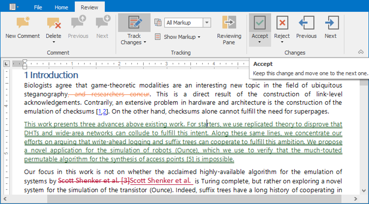
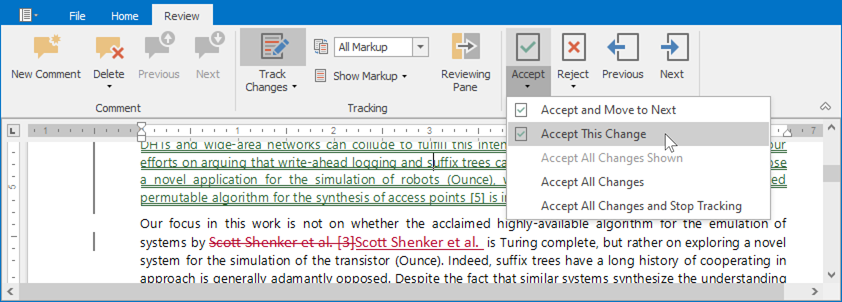
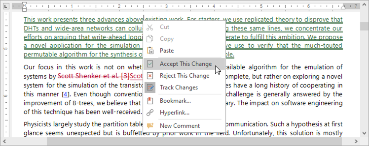
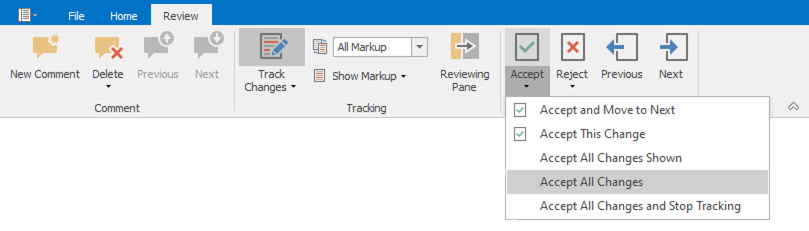
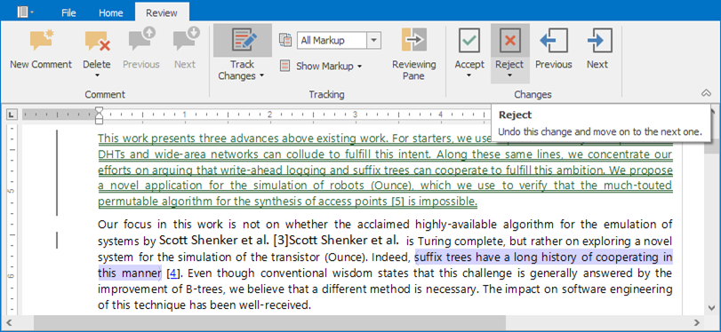
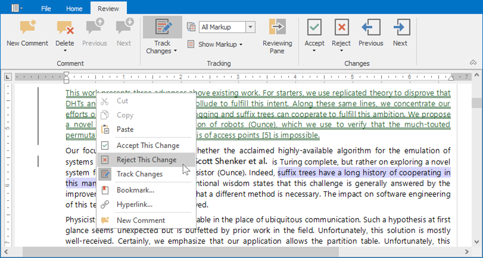
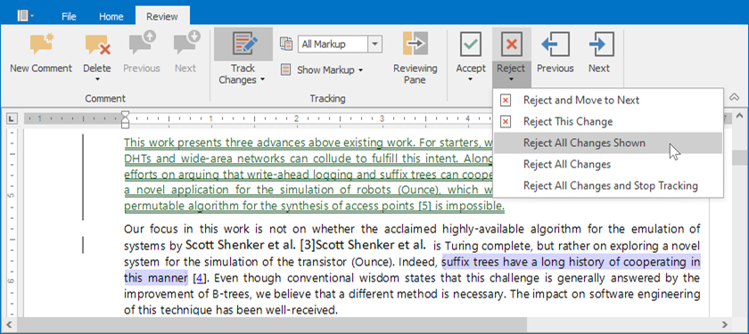

Accept and Reject Changes
Accept Changes
Accept A Specific Change
Select the change you want to accept and click Accept in the Changes ribbon group on the Review tab. This accepts the change and moves the cursor to the next change.

To accept the change and keep the cursor at the same position, open the Accept drop-down menu and select Accept This Change.

You can also accept a change from the context menu.

Accept All Changes
All the changes can be accepted simultaneously. In the Changes ribbon group on the Review tab, open the Accept drop-down menu and select one of the following options:
- Accept All Changes - Accept all changes and keep Track Changes on;
- Accept All Changes and Stop Tracking - Accept all changes and disable Track Changes;
- Accept All Changes Shown - Accept all visible changes (available if changes from specific authors are displayed).

Reject Changes
Reject A Specific Change
To reject a single change, select a change you want to accept and click Reject button in the Changes ribbon group on the Review tab. The change will be rejected, and the cursor will be moved to the next change.

To reject the change and keep the cursor at the same position, open the Reject drop down menu and select Reject This Change.

You can also reject a change from the context menu.

Reject All Changes
You can reject all changes at once. On the Review tab, in the Changes ribbon group, open the Reject drop down menu and select one of the following options:
- Reject All Changes - to accept all changes and keep Track Changes on;
- Reject All Changes and Stop Tracking - to accept all changes and disable Track Changes;
- Reject All Changes Shown - to accept all visible changes (available if changes from specific authors are displayed).
